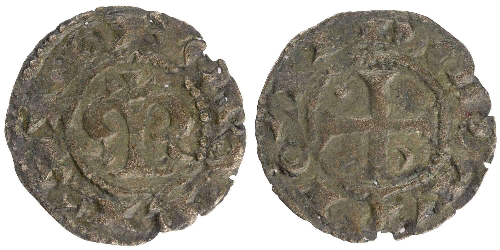

O leilão 13 da Filmoedas, que terá lugar em 25 de Junho de 2026, abre com um dinheiro de D. Afonso Henriques, cuja foto esteve durante muitos anos alojada no blog "Dinheiros", como pertencente à colecção de Jaime Salgado. O exemplar está estudado no meu livro, onde apresento o primeiro inventário dos dinheiros de D. Afonso Henriques, com fotos de todas as moedas e respectivas notas, à semelhança do que já fizera com os dinheiros de estrela, cujo estudo, actualizado e com novos exemplares, também fará parte do livro.